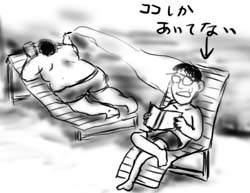
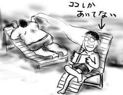
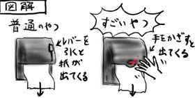
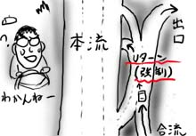
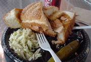

今年初めてプールを利用してみました。
プールでだらだら泳いで、疲れたらベンチで本を読んだりして優雅さを(自分で無理矢理)演出です。隣のアザラシのような男性がプカプカとタバコをふかせていて台無しに。
ところで久しぶりにクロールとかすると耳に無茶苦茶水が入りますね。
今年初めてプールを利用してみました。
プールでだらだら泳いで、疲れたらベンチで本を読んだりして優雅さを(自分で無理矢理)演出です。隣のアザラシのような男性がプカプカとタバコをふかせていて台無しに。
ところで久しぶりにクロールとかすると耳に無茶苦茶水が入りますね。
今日は会社が休みだったので、同僚Tuanの案内でちょっと遠くのゲーセンまで足を運びました。
それなりに広いのですが、日本のいわゆるアミューズメント施設のようで、逆に家の裏のゲーセンみたいな面白みはありませんでした。施設に入る時にフォトIDをチェックされるのは、簡単なバーと一緒になっていてアルコールが飲めるからです。やっぱりゲーセンは紳士のたしなみ、大人の娯楽ですなぁと思って中に入ると、小さなお子様方やティーンエイジャーがキャッキャッと遊んでました。あれぇ？
Tuanがトイレに行くというので、どんなゲームが設置されているのかを眺めながら待っていたところ、「Taku! Taku! 」とトイレからTuanが目を輝かせながら走り出してきました。トイレで一体何が。
わけも分からないまま、Tuanの後についてトイレに入っていくと、センサーで反応するペーパータオル供給機が！Tuanはうれしそうに手をかざし、モーターで出てくるペーパータオルを見てゲラゲラと笑っています。僕もトライ。こうしてまた僕は、遠い国で資源を無駄にしています。しかし、こっちの人はペーパータオルが無くなったらどうやって生きていくんだろう、というくらいペーパータオルを使いまくりますね。
ゲーセンでは、コナミの『WARTRAN TROOPERS』を延々やり込んでいる軍服のお兄さんがいましたが、こっちで軍服を着ている人はマジもんかそうでないか判断しにくくて困ります(違う意味のマジもんです)。
というわけで、割と最新の大型筐体が置いてあるのですが、それと同時に光線銃で樽とか撃つゲームもまだ現役で稼働している(そして割とプレイされている)辺りが日米ゲーセンの違いでしょうか。
休日出勤した後、「Super Size Me」を見てきました。
30日間三食マクドナルドだけを食べて生活するという導入から想像するもの以上に、まっとうなドキュメンタリー映画でした。
監督のモーガンはN.Y.やL.A.、全米一の肥満都市(当時はテキサスのHouston)などを回り、インタビューを行いながらアメリカのファーストフード業界に切り込んでいく。
マクドナルドはハッピーセットを導入したり、子供の遊び場を設置したり、積極的に子供をターゲットにマーケティングを行っている。子供達は毎日大量のファーストフードや菓子のCMを見ている。アメリカの学校では、家庭科も体育も授業がない。映画の中で子供達や街頭の人たちはカロリーが何の単位か答えられない。子供達は、学校の食堂で、毎日業者が卸した冷凍ピザや冷凍フライドポテトを食べながら砂糖水を飲んでいる。そうやって育った子供の食習慣が大人になって改善するだろうか？そして、また同じものを自分の子供に与えている。教育の問題なのだ。
今回の実験に対して「そんなのは体に悪いの当たり前じゃん」という意見については、マクドナルドの顧客のなんと72%が週3食以上をマクドナルドで済ませるヘビーユーザ。あり得ない話ではない。としている。
映画の結論は、ここに書くのは野暮だと思うので書かないけど、至極納得がいくもので、このドキュメンタリーが映画というフォーマットで全米上映されることに意味があると思わせるもの。
というわけで大変おもしろかったです。最後のモーガンの担当医の一人の台詞「今までは(ファーストフードの問題について)考えた事あまりなかったわね」に不覚にもなんだか目頭がアツくなりました(弱い)。日本の給食や家庭科の授業が心底ありがたいと思えますよ。
ちなみに監督兼主演のモーガンの彼女は大変奇麗な人なので、めがねっこスキーさんは是非見に行くべきだと思いました(間違った推薦)。日本ではいつやるか分かりませんけど。
(つづき)というわけでテキサスはオースティンへ飛行。
アリゾナ砂漠の上空を飛んで行くため、中々どうして景観がよかったです。荒涼とした砂漠の終焉に差し掛かると、どこからか湧いて来た雲に徐々に覆われて行く様は日本ではなかなか見られないものです。途中砂漠内に畑にしか見えない区画があったのですが、なぜか色は紫色でした。これも日本では見られないものです。あれは一体何を栽培しているのか。
空港到着後、レンタカーを拾ってホテルに向かったのですが、フリーウェイの作りが違うので、無理矢理Uターンさせられたりして迷った挙げ句、交差点で下を向いて地図を確認していたら前の車にコツン☆とやりました(かわいく表現してもダメです)。無傷だったので助かりました。
ホテルに辿り着いた時には夜の11時半。腹が減って仕方なかったので、ルームチャージで冷凍ホットパイをレンジでチンしてむしゃむしゃと食いました。その後、マネージャの部屋で、ビールを飲んでいる他の出張者に、なぜ乗り遅れたかをうまくオブラートに包みながら説明してました(AM2:30まで)。みんな話し込み過ぎDEATH。僕の遅刻ネタによって、ゴルフの話題を減らせたのは怪我の功名です。これからもそうしよう！(ダメです)
その後、バランスを取るためにネットでチャットは忘れませんでしたよ(ホテルは無料でインターネット接続が使えるので)。早く寝ろという話ですよ。
翌朝、ミーティングに２時間ほど参加した後、13:30の飛行機でカリフォルニアにトンボ帰り。空港で、ターキーサンドを頼んだらバカみたいな量が出てきました。今回の出張で一番テキサスを感じた瞬間でした。

まとめ：